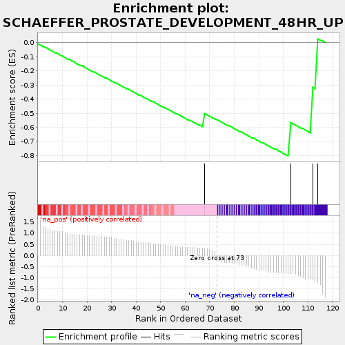
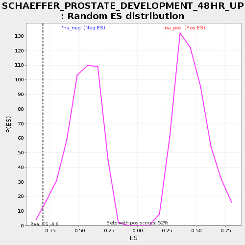

| | | Dataset | selected_gsea_35 |
| Phenotype | NoPhenotypeAvailable |
| Upregulated in class | na_neg |
| GeneSet | SCHAEFFER_PROSTATE_DEVELOPMENT_48HR_UP |
| Enrichment Score (ES) | -0.8025177 |
| Normalized Enrichment Score (NES) | -1.7389987 |
| Nominal p-value | 0.0125 |
| FDR q-value | 0.5316688 |
| FWER p-Value | 0.999 |
Table: GSEA Results Summary

Fig 1: Enrichment plot: SCHAEFFER_PROSTATE_DEVELOPMENT_48HR_UP
Profile of the Running ES Score & Positions of GeneSet Members on the Rank Ordered List
| PROBE | GENE SYMBOL | GENE_TITLE | RANK IN GENE LIST | RANK METRIC SCORE | RUNNING ES | CORE ENRICHMENT | | 1 | NAMPT | | | 68 | 0.315 | -0.5043 | No |
| 2 | GAS6 | | | 103 | -0.803 | -0.5677 | Yes |
| 3 | CAMK4 | | | 112 | -1.094 | -0.3177 | Yes |
| 4 | LMCD1 | | | 114 | -1.206 | 0.0263 | Yes |
Table: GSEA details [plain text format]

Fig 2: SCHAEFFER_PROSTATE_DEVELOPMENT_48HR_UP: Random ES distribution
Gene set null distribution of ES for SCHAEFFER_PROSTATE_DEVELOPMENT_48HR_UP